03/11/2023 — Hãy xem ca “NSTEMI” này bị bỏ sót bản chất thật sự, diễn tiến ra sao và điều gì đã xảy ra
Bản dịch tiếng Việt của bài "See this “NSTEMI” go unrecognized for what it really is, how it progresses, and what happens" – Dr. Smith’s ECG Blog. Giữ nguyên toàn bộ 12 hình ảnh của bản gốc.
Bài viết của Nathanael Franks MD, được Meyers, Smith, Grauer, v.v. duyệt lại.
Một người đàn ông ở độ tuổi 70, tiền sử tăng huyết áp, rối loạn lipid máu, bệnh động mạch vành (CAD) đã đặt stent động mạch mũ trái 2 năm trước, đến khoa cấp cứu (ED) vì đau ngực từng cơn khi gắng sức ngày càng nặng, đỡ khi nghỉ. Cơn đau ngực lần này bắt đầu từ 3 giờ trước và kéo dài dai dẳng ngay cả khi nghỉ.
Điện tâm đồ lúc phân loại (triage) tại Thời điểm = 0:

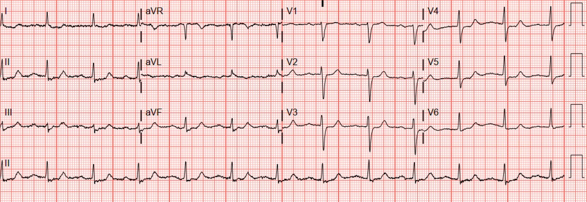
Smith: Tôi nghi ngờ OMI thành sau vì ST chênh xuống ở V2 và V3
Điện tâm đồ nền (vài tháng trước):

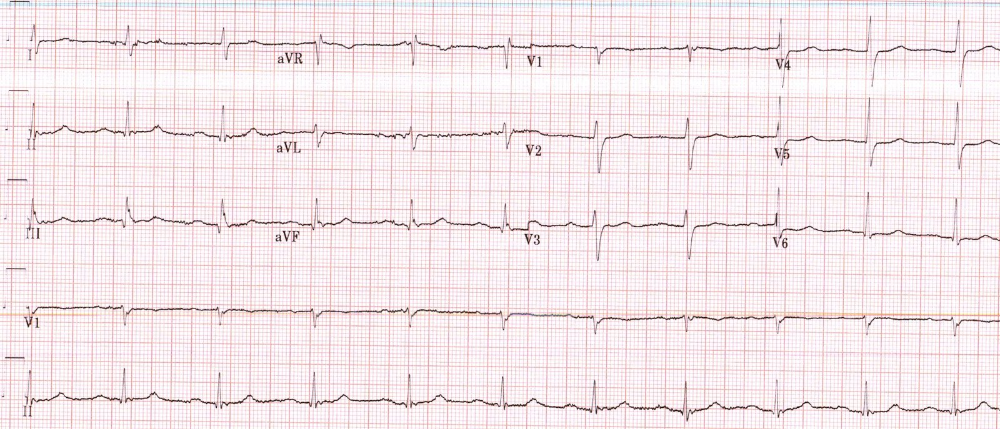
Smith: Giờ tôi càng nghi ngờ OMI thành sau hơn nữa, vì điện tâm đồ nền có ST chênh lên bình thường ở V2 và V3
Diễn giải điện tâm đồ:
Điện tâm đồ lúc phân loại cho thấy nhịp xoang với hình ảnh thiếu máu cục bộ dưới nội tâm mạc, thể hiện qua ST chênh xuống (STD) ở V3-V6, II, III và aVF, kèm ST chênh lên (STE) soi gương nhỏ ở aVR.
Điện tâm đồ nền về cơ bản bình thường, không có thiếu máu cục bộ.
Đây là nhận định của Queen of Hearts về điện tâm đồ nền:

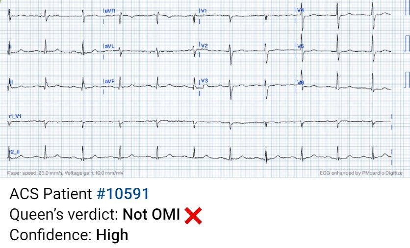
Điện tâm đồ lúc phân loại khi đang đau ngực cũng được đọc là không phải OMI:

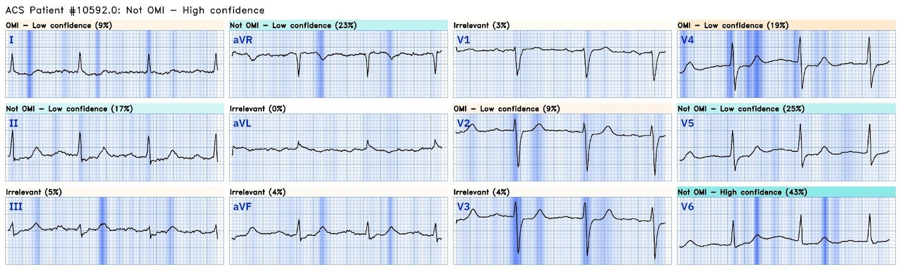
Cô ấy nói “không phải OMI”, nhưng cô ấy không được tiếp cận điện tâm đồ nền. Trong tương lai, chúng tôi sẽ có thể cho cô ấy so sánh với các điện tâm đồ trước đó và các điện tâm đồ liên tiếp.
Bạn có thể thấy trong phần phân tích theo từng chuyển đạo rằng cô ấy “nhìn thấy” STD ở V5, V5 và II, cùng STE ở aVR, là những dấu hiệu của “Không phải OMI”, vì hình ảnh thiếu máu cục bộ dưới nội tâm mạc không giống với OMI. Trong phiên bản tới, cô ấy sẽ được huấn luyện để báo cáo thiếu máu cục bộ dưới nội tâm mạc như một chẩn đoán riêng. Hiện tại cô ấy chỉ có thể nói Không phải OMI. Bạn cũng có thể thấy cô ấy nhận định chuyển đạo V2 và V4 hơi đáng lo ngại về OMI thành sau, nhưng cô ấy cho rằng chúng không đủ đặc hiệu so với hình ảnh thiếu máu cục bộ dưới nội tâm mạc.
Điện tâm đồ được đọc là “Không có STEMI” và bệnh nhân được xử trí như một bệnh nhân đau ngực thông thường (mặc dù trên thực tế, một bệnh nhân đau ngực đang còn đau và đang có thiếu máu cục bộ dưới nội tâm mạc là nguy cơ rất cao). Troponin được chỉ định.
Thời điểm = 45 phút: troponin I độ nhạy cao (hs Troponin I) trả về 15 ng/L (trong giới hạn trên tham chiếu bình thường là 20)
Thời điểm = 1,5 giờ: troponin lần thứ hai tăng lên 26 ng/L.
Vì troponin tăng (chứ không phải vì đã hết đau), điện tâm đồ được ghi lại:

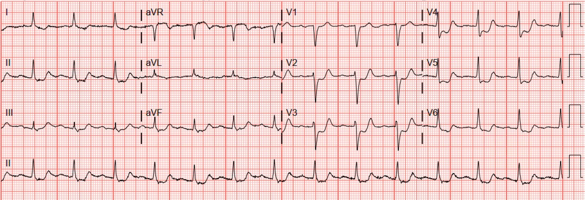
Smith: Tôi nghĩ nó trông giống OMI thành sau hơn. Khi Pendell và tôi mã hóa các điện tâm đồ để huấn luyện Queen, đây là một nhóm riêng: “Chắc chắn có thiếu máu cục bộ, khó phân biệt giữa OMI thành sau và thiếu máu cục bộ dưới nội tâm mạc.”
Giờ đây Queen of Hearts cho rằng bản ghi này trông giống OMI thành sau, vì STD có vẻ nặng nhất ở V3-4:

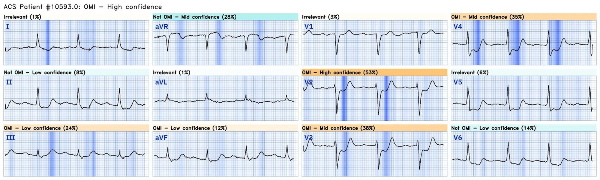
Dường như cả bác sĩ cấp cứu lẫn bác sĩ tim mạch được mời hội chẩn đều không hiểu được bất kỳ điều nào trong số này. Ông được chẩn đoán là nhồi máu cơ tim không ST chênh lên (NSTEMI). Ông đã được dùng aspirin và heparin. Trước tình trạng đau kéo dài và troponin tăng dần, thay vì đưa bệnh nhân vào phòng thông tim (cath lab) như mọi hướng dẫn về NSTEMI trên thế giới khuyến cáo, bệnh nhân lại được cho morphine, truyền nitroglycerin và nhập viện.
Smith: Đọc thêm về mối nguy hiểm của morphine. Theo quan điểm của chúng tôi, không nên dùng morphine trong hội chứng vành cấp (ACS) trừ khi bạn đã quyết định đưa bệnh nhân vào phòng thông tim. Chúng tôi đã chứng minh rằng morphine liên quan chặt chẽ với việc chậm trễ đưa vào phòng thông tim ở những bệnh nhân cần thông tim cấp cứu.
Thời điểm = 3 giờ: troponin lần tiếp theo trả về 60 ng/L. Ghi chép bệnh án lúc này mô tả bệnh nhân đang trong tình trạng sốc tim, phải dùng thuốc vận mạch. Điện tâm đồ ghi lại:

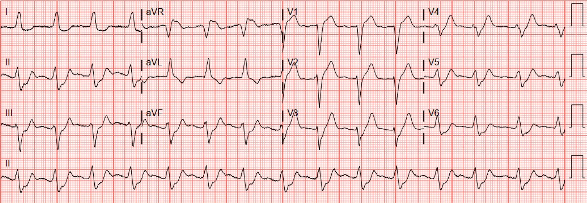
Meyers: Đây là lần đầu tiên tôi thấy sự kết hợp này! LBBB kèm sóng T tối cấp de Winter ở các chuyển đạo V2-V5. Cũng có thể mô tả là LBBB với hình ảnh xoáy trước tim (precordial swirl), nhiều khả năng có STE / sóng T tối cấp (HATW) quá mức ở V1/2 kèm STD soi gương quá mức ở V5/6. II, III và aVF có STD không phù hợp, nhiều khả năng là STD soi gương.
Nếu bạn chưa chắc “Swirl” là gì, hãy xem tại đây:
Xoáy trước tim (Precordial Swirl) — 20 ca Swirl hoặc hình ảnh trông giống Swirl
Queen, vốn đã được huấn luyện trên một số điện tâm đồ OMI có LBBB và một số điện tâm đồ de Winter không có LBBB, lần đầu tiên gặp chúng kết hợp với nhau, đã ngay lập tức chẩn đoán OMI với độ tin cậy cao và làm nổi bật hình ảnh de Winter trong LBBB:

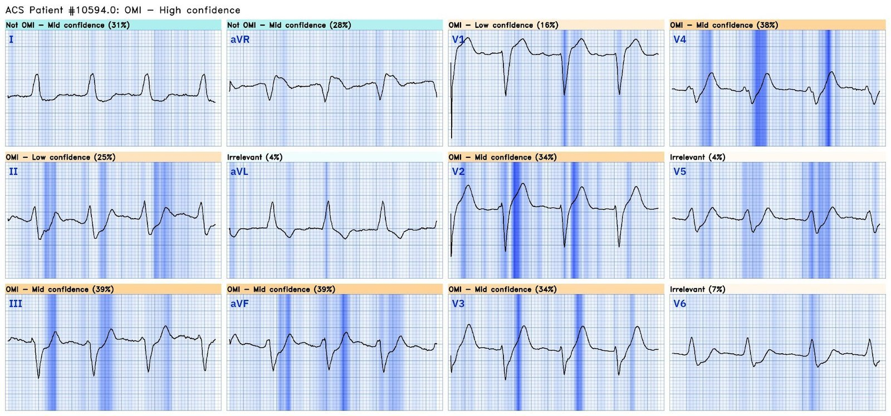

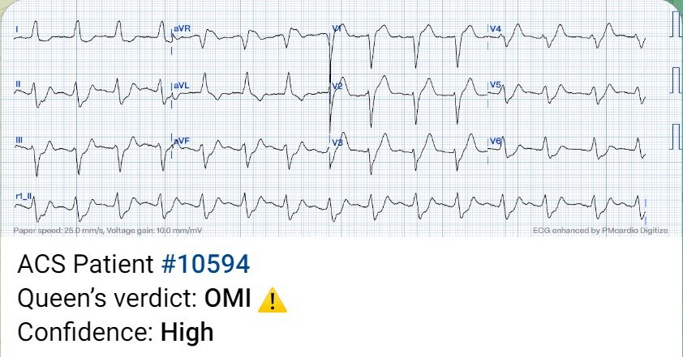
Cuối cùng bệnh nhân được đưa vào phòng thông tim vào khoảng 4,5 giờ kể từ khi đến viện, tại đó phát hiện tắc LAD cấp do huyết khối, được đặt stent và đạt dòng chảy TIMI 3, nhưng bệnh nhân vẫn trong tình trạng sốc tim nặng. Impella được đặt để tăng cung lượng tim. Chụp buồng thất trái cho thấy loạn động nặng vùng mỏm và thành trước kèm giảm động lan tỏa mức độ vừa. Phân suất tống máu thất trái ghi nhận khoảng 20%.
Trong 24 giờ sau đó, ông tiến triển sốc tim kháng trị ngày càng nặng và tử vong.
Điểm cần học:
Theo mọi hướng dẫn trên thế giới, bất kỳ bệnh nhân NSTEMI nào có triệu chứng ACS đang tiếp diễn, kháng trị với điều trị nội khoa, đều phải được đưa vào phòng thông tim trong vòng 2 giờ nếu có điều kiện, bất kể dấu hiệu trên điện tâm đồ. Thế nhưng điều này hiếm khi được tuân thủ, và thỉnh thoảng lại dẫn đến những kết cục như ở bệnh nhân này.
Bệnh nhân này có các điện tâm đồ thiếu máu cục bộ dai dẳng với hình ảnh thiếu máu cục bộ dưới nội tâm mạc và triệu chứng ACS đang diễn ra. Mặc dù hình ảnh thiếu máu cục bộ dưới nội tâm mạc có thể do bất kỳ nguyên nhân nào gây mất cân bằng cung/cầu trong vô số tình huống lâm sàng, tình huống của bệnh nhân này là đau ngực cấp phù hợp với ACS. Do đó, điều này có nghĩa là ACS típ 1 cấp do nứt vỡ mảng xơ vữa, với dòng chảy bị cản trở và sắp tắc hoàn toàn, cho đến khi chứng minh được điều ngược lại.
Sau đó, điện tâm đồ thứ ba của bệnh nhân cho thấy một sự kết hợp rất hiếm gặp: sóng T de Winter xuất hiện trong lúc có LBBB. Tôi chưa từng thấy báo cáo ca bệnh nào về sự kết hợp này.
Ứng dụng AI Queen of Hearts hy vọng sẽ được FDA phê duyệt trong quý 1 năm 2024. Ứng dụng đã được phê duyệt ở châu Âu.
BẠN CÓ CƠ HỘI ĐƯỢC TIẾP CẬN SỚM PM Cardio AI BOT!! (ỨNG DỤNG AI OMI CỦA PM CARDIO)
Nếu bạn muốn bot này giúp bạn chẩn đoán sớm OMI và cứu bệnh nhân cùng cơ tim của họ, bạn có thể đăng ký nhận phiên bản beta sớm của bot tại đây. Bot hiện chưa được phát hành, nhưng đây là cách để bạn có tên trong danh sách.
https://share-eu1.hsforms.com/18cAH0ZK0RoiVG3RjC5dYdwfyfsg (biểu mẫu đăng ký tiếp cận sớm)
Một số tài liệu tham khảo về hình thái de Winter:
1. de Winter RJ, Verouden NJ, Wellens HJJ, Wilde AA. A new ECG sign of proximal LAD occlusion. Tạp chí N Engl J Med. 2008;359:2071–2073.
2. Verouden NJ, Koch KT, Peters RJ, Henriques JP, Baan J, van der Schaaf RJ, Vis MM, Tijssen JG, Piek JJ, Wellens HJ, Wilde AA, de Winter RJ. Persistent precordial “hyperacutic” T-waves signify proximal left anterior descending artery occlusion. Tạp chí Heart. 2009;95:1701–1706.
3. Morris N, Body R. The De Winter ECG pattern: morphology and accuracy for diagnosing acute coronary occlusion: systematic review. Tạp chí Eur J Emerg Med. 2017;24:236–242.
4. Goebel M, Bledsoe J, Oxford JL, Mattu A, Brady WJ. A New ST-segment elevation myocardial infarction equivalent pattern? Prominent T wave and J-point depression in the precordial leads associated with ST-segment elevation in lead aVR. Tạp chí Am J Emerg Med. 2014;32:e5–e8.
5. Hayakawa A, Tsukahara K, Miyagawa S, và cs. The reappearance of de Winter’s pattern caused by acute stent thrombosis: A case report. Tạp chí J Cardiol Cases. 2022;25(6):404-407. Xuất bản ngày 20 tháng Hai năm 2022. doi:10.1016/j.jccase.2022.01.006
6. Hướng dẫn hiếm khi được tuân thủ: Lupu L, Taha L, Banai A, Shmueli H, Borohovitz A, Matetzky S, Gabarin M, Shuvy M, Beigel R, Orvin K, Minha S ’ar, Shacham Y, Banai S, Glikson M, Asher E. Immediate and early percutaneous coronary intervention in very high-risk and high-risk non-ST segment elevation myocardial infarction patients. Tạp chí Clin Cardiol [Internet]. 2022;Truy cập tại: https://onlinelibrary.wiley.com/doi/10.1002/clc.23781
7. Morphine nguy hiểm: Bracey, A. Meyers HP. Smith SW. Wei L. Singer DD. Singer A. Association between opioid analgesia and delays to cardiac catheterization of patients with occlusion Myocardial Infarctions. Tạp chí Academic Emergency Medicine 27(S1): S220; tháng Năm 2020. Tóm tắt (Abstract) 556.

===================================
BÌNH LUẬN CỦA TÔI, bởi KEN GRAUER, MD (3/11/2023):
===================================
Việc phân biệt giữa OMI thành sau với sóng T deWinter — đôi khi dễ dàng, nhưng đôi khi lại khó một cách đáng ngạc nhiên. Vì vậy, tôi thấy ca hôm nay đặc biệt thú vị và sâu sắc trong việc phân biệt giữa 2 thực thể này.
- Nhằm làm nổi bật thêm một số Điểm cần học — tôi đã làm 2 hình so sánh các bản ghi của ca hôm nay — bắt đầu với Hình 1.
CÂU HỎI:
- Tại thời điểm nào trong ca hôm nay thì nhu cầu thông tim kịp thời được khẳng định?
- — GỢI Ý: Hãy xem xét 2 bản ghi trong Hình 1.

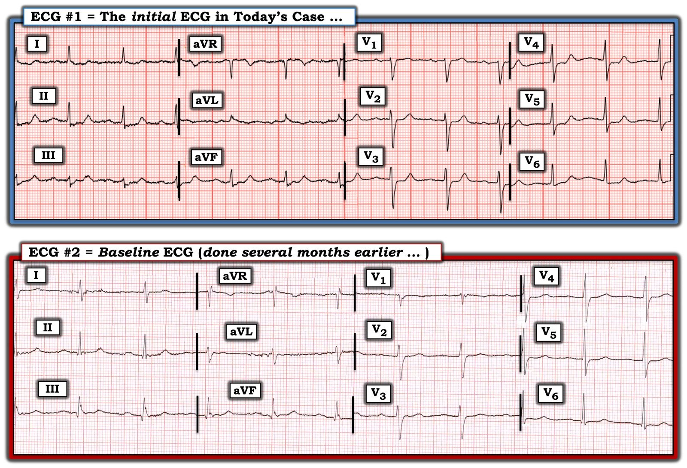
Thời điểm Khẳng định Nhu cầu Thông tim Kịp thời:
Bệnh sử trong ca hôm nay là một người đàn ông ở độ tuổi 70 có bệnh mạch vành (đã đặt stent LCx khoảng 2 năm trước) đã biết. Ông đến viện vì đau thắt ngực mới xuất hiện gần đây, tiến triển thành một đợt 3 giờ đau ngực dai dẳng, không đỡ khi nghỉ.
- Như Bs. Franks, Meyers & Smith đã nêu — điện tâm đồ ban đầu rõ ràng bất thường, với nhiều chuyển đạo cho thấy đoạn ST thẳng đuỗn, ST chênh xuống nhẹ và phần cuối sóng T dương.
- Bất kể điện tâm đồ #1 phản ánh DSI (thiếu máu cục bộ dưới nội tâm mạc lan tỏa – Diffuse Subendocardial Ischemia) hay OMI thành sau — bệnh nhân này rõ ràng có nguy cơ rất cao, với nhu cầu ra quyết định nhanh để xác định LIỆU ông có đang tiến triển một biến cố cấp hay không (tức là, Nhanh chóng tìm bản ghi trước đó — và — Ghi lại điện tâm đồ ban đầu trong vòng không quá 15-20 phút!).
Đáng tiếc là — 1,5 giờ đã trôi qua cho đến khi điện tâm đồ cuối cùng mới được ghi lại …
- Nhưng một điện tâm đồ nền từ vài tháng trước đã được tìm thấy ( = điện tâm đồ #2 — trình bày trong Hình 1). Như Bs. Franks, Meyers & Smith đã nêu — So sánh 2 bản ghi trong Hình 1 cho thấy rõ những thay đổi đáng kể ở nhiều chuyển đạo.
- ĐIỀU CỐT LÕI: Với bệnh sử một người đàn ông ở độ tuổi 70 có bệnh mạch vành đã biết + đau ngực dai dẳng mới + một điện tâm đồ ban đầu gợi ý mạnh DSI (nếu không phải là OMI thành sau cấp) với các thay đổi ST-T mới không thể chối cãi so với bản ghi trước đó được ghi vài tháng trước — nhu cầu thông tim kịp thời rõ ràng được khẳng định ngay khi tìm thấy điện tâm đồ nền của bệnh nhân này! Không cần đến giá trị troponin hay thêm điện tâm đồ nào nữa để đưa ra quyết định kích hoạt phòng thông tim ngay lập tức.
=================================
Trước đây chúng tôi đã đăng nhiều ca minh họa sóng T deWinter (Vui lòng xem phần Bình luận của tôi ở cuối trang trong bài đăng ngày 17 tháng Tư năm 2023 trên Dr. Smith’s ECG Blog — trong đó tôi điểm lại các dấu hiệu điện tâm đồ từ bản thảo gốc năm 2008 của deWinter và cs.). Dưới đây tôi nhắc lại một số nhận xét của tôi từ bài đăng đó về sóng T deWinter:
- Nhiều ca tôi đã gặp không phù hợp với định nghĩa chặt chẽ của “sóng T deWinter” (như deWinter và cs. đã mô tả) — ở chỗ có thể không phải cả 6 chuyển đạo ngực đều bị ảnh hưởng — điểm J chênh xuống thường rất ít (nếu có) ở nhiều chuyển đạo ngực — và, số chuyển đạo biểu hiện sóng T khổng lồ là hạn chế.
- Thay đổi điện tâm đồ trong nhiều ca tôi đã gặp không “tĩnh” cho đến khi tái tưới máu (như deWinter và cs. đã báo cáo ban đầu năm 2008).
“Quan điểm của tôi” — về sóng T deWinter:
- Tôi tin rằng có một phổ các dấu hiệu điện tâm đồ mà, trong bối cảnh triệu chứng tim mới khởi phát, thực sự có giá trị dự báo tắc LAD cấp là nguyên nhân. Tôi ngờ rằng ở mức độ lớn — những gì thấy được trên điện tâm đồ phụ thuộc rất nhiều vào việc điện tâm đồ được ghi vào lúc nào trong quá trình bệnh.
Ca hôm nay bổ sung gì cho hiểu biết của chúng ta:
Như tôi đã nói ở đầu phần Bình luận của tôi — đôi khi rất dễ phân biệt giữa OMI thành sau với sóng T deWinter. Nhưng đôi khi (như trong ca hôm nay!) — việc này có thể khó một cách đáng ngạc nhiên ở giai đoạn sớm của quá trình!
- Phổ các dấu hiệu điện tâm đồ có thể liên quan đến sóng T deWinter không chỉ phụ thuộc vào việc điện tâm đồ được ghi vào lúc nào trong quá trình — mà còn phụ thuộc vào hình dạng của điện tâm đồ nền!
Tôi hoàn toàn thừa nhận rằng tôi đã không dự đoán được điện tâm đồ #1 là bản ghi ban đầu của một quá trình sẽ tiến triển thành hình ảnh sóng T deWinter rõ ràng, dự báo OMI do LAD của ông. Nhìn lại — đã có những manh mối:
- ĐIỂM THEN CHỐT (PEARL) #1: Khi bạn NHÌN lại lần nữa 2 bản ghi trong Hình 1 — Lưu ý rằng so với bản ghi trước đó vốn cho thấy ST-T dẹt lan tỏa — điện tâm đồ #1 cho thấy sóng T nhọn dần đang xuất hiện ở cả 6 chuyển đạo ngực (lan ra tới tận chuyển đạo V5 và V6!). Mặc dù OMI thành sau thường có đặc điểm phần cuối sóng T dương — điều này thường không lan ra tới chuyển đạo V6.
- Mặc dù sóng T deWinter điển hình cho thấy nhánh lên của sóng T dốc lên nhanh — Việc thấy các đoạn ST ở tất cả chuyển đạo ngực dẹt đến mức nào trên điện tâm đồ nền lẽ ra phải gợi ý cho tôi không nên trông đợi nhánh lên sóng T dốc nhanh ở giai đoạn sớm của quá trình.
- ĐIỂM THEN CHỐT #2: Việc không có dấu hiệu OMI thành dưới cấp trên điện tâm đồ #1 — là một đặc điểm chống lại khả năng có OMI thành sau. Xin nhấn mạnh: Việc thiếu các dấu hiệu điện tâm đồ gợi ý OMI thành dưới không loại trừ khả năng OMI thành sau (tức là, Có thể có OMI thành sau đơn độc — như có thể xảy ra với OMI nhánh bờ tù (Obtuse Marginal)) — nhưng rõ ràng việc thấy dấu hiệu điện tâm đồ gợi ý tổn thương cả thành dưới và thành sau phổ biến hơn so với OMI thành sau đơn độc.
Tôi thấy thú vị khi theo dõi diễn tiến qua điện tâm đồ #3 (ghi 1,5 giờ sau điện tâm đồ #1) — rồi đến điện tâm đồ #4 (ghi 3 giờ sau điện tâm đồ #1) — mà tôi trình bày trong Hình 2, nơi đặt cạnh nhau cả 3 điện tâm đồ được ghi trong ngày bệnh nhân này đến viện.
- Tôi hoàn toàn thừa nhận rằng khi thấy điện tâm đồ #3 — tôi càng “tin chắc” hơn rằng bệnh nhân đang tiến triển OMI thành sau cấp — vì điều mà tôi diễn giải là ST-T chênh xuống tối đa ở chuyển đạo V3 và V4.
- ĐIỂM THEN CHỐT #3: Tôi đã bỏ sót manh mối trong điện tâm đồ #3 — rằng khi mức điểm J chênh xuống ở các chuyển đạo ngực ngày càng lớn — thì độ dốc của nhánh lên sóng T rõ ràng ngày càng dốc hơn (so với điện tâm đồ #1) — đồng thời phần cuối sóng T dương nhọn cũng tăng lên (so với điện tâm đồ #1) ở cả 6 chuyển đạo ngực.
- ĐIỂM THEN CHỐT #4: Chỉ nhìn vào ST-T trên điện tâm đồ #4 — Chẳng phải diễn tiến của các thay đổi ST-T qua 3 bản ghi trong Hình 2 giờ đây hoàn toàn đặc trưng cho sóng T deWinter hay sao? (tức là, điểm J chênh xuống rõ ở các chuyển đạo V3 đến V6 — với nhánh lên sóng T dốc đứng, kết thúc bằng sóng T cao, nhọn một cách không tương xứng trên các chuyển đạo ngực).
- ĐIỂM THEN CHỐT #5: Như Bs. Meyers đã nêu — Ca hôm nay bổ sung một biến thể sóng T deWinter mà trước đây tôi chưa từng gặp = LBBB kèm sóng T deWinter. Trong “loạt 1 ca” của tôi — bệnh nhân hôm nay đã tử vong, gợi ý tiên lượng nặng nề cho sự kết hợp này.
LƯU Ý KẾT THÚC: Dù tôi thấy thú vị đến đâu khi quay lại truy tìm những manh mối tinh tế gợi ý LAD thay vì LCx là động mạch “thủ phạm” trong ca hôm nay — Bất kể động mạch thủ phạm cuối cùng là gì trong ca hôm nay — lẽ ra phải thông tim kịp thời ngay khi tìm thấy bản ghi nền.

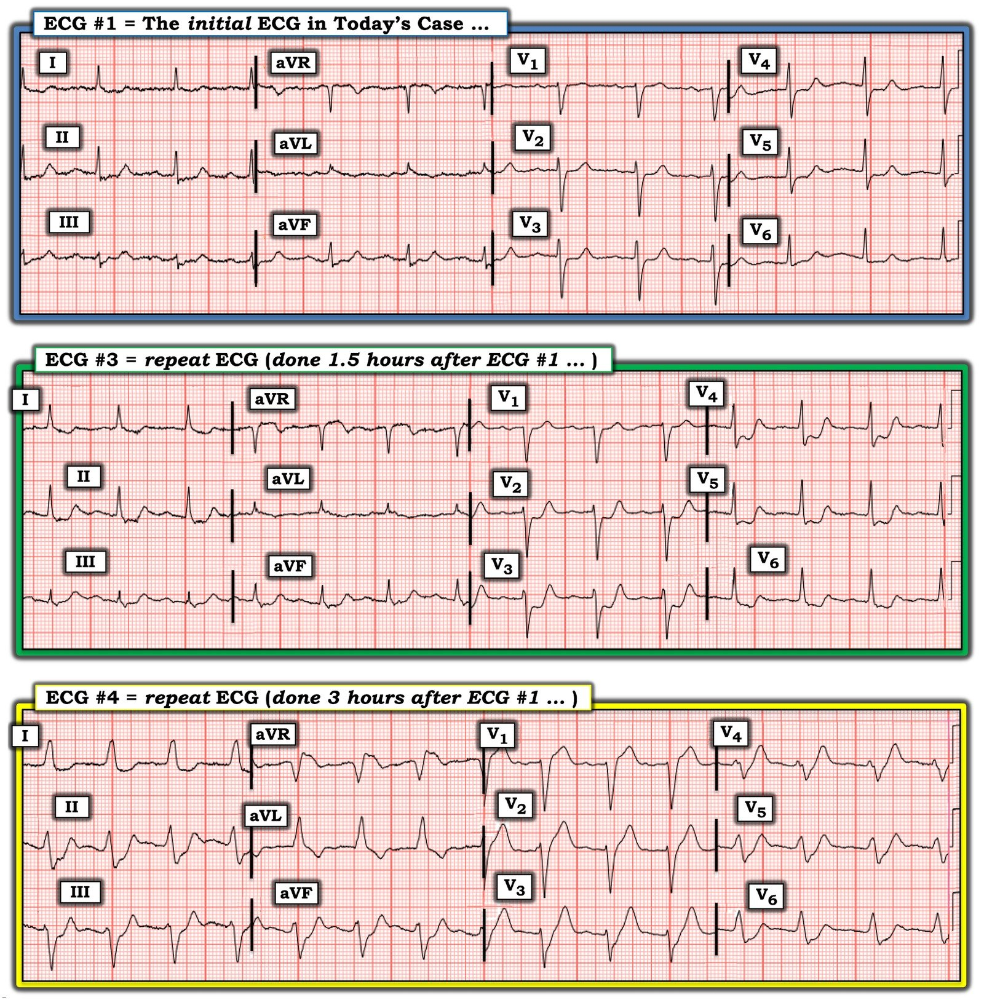